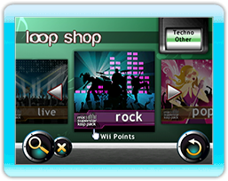

22 |
Geluidsfragment Shop |
 |
|

Je kunt vanuit het Lanceer Menu en via het Mix Menu icoon naar de Geluidsfragment Shop gaan door ‘Geluidsfragment Shop’ te selecteren. Volg de instructies op het scherm om deze geweldige aanvullingen op het geluidsfragment pakket die beschikbaar zijn voor Mix Superstar te bekijken en deze te downloaden zodat jij jouw mixes naar een nieuw niveau kunt brengen!
Om aanvullende pakketten te downloaden, begin je door één van de vier muziekgenres te selecteren en de geluidsfragment pakketten die op dat moment voor dat genre beschikbaar zijn zullen getoond worden. Gebruik de A-knop om het pakket dat je wilt downloaden te selecteren en de albumhoes zal omdraaien met een beschrijving van het geluidsfragment pakket. Druk op de ‘Download’ knop en volg de stappen op het scherm om het geluidsfragment pakket te downloaden.
Als je niet genoeg vrije blokken hebt om een pakket te downloaden, kun je een bestaand geluidsfragment pakket verwijderen door de ‘Pakketten Verwijderen’ knop te gebruiken. Er verschijnt nu een lijst van geluidsfragment pakketten die je eerder gedownload hebt. Selecteer het pakket dat je wilt verwijderen door de A-knop in te drukken en selecteer vervolgens de ‘Verwijderen’ knop. Alle verwijderde geluidsfragment pakketten kun je gratis opnieuw downloaden en zo vaak als je maar wilt.
Er zijn verschillende muziek geluidsfragment pakketten die gedownload kunnen worden binnen dit spel. Wii Points zijn ook vereist om de beschikbare geluidsfragment pakketten te downloaden. (Dit is niet gratis). Er moet ruimte in het Wii-systeemgeheugen zijn om geluidsfragment pakketten te downloaden. Als er niet genoeg ruimte is kan je onnodige gegevens in het Wii-systeemgeheugen verwijderen of deze naar een SD Kaart verplaatsen.
All gedownloade geluidsfragment pakketten kunnen alleen met Mix Superstar gebruikt worden. |
 |
 |
 |